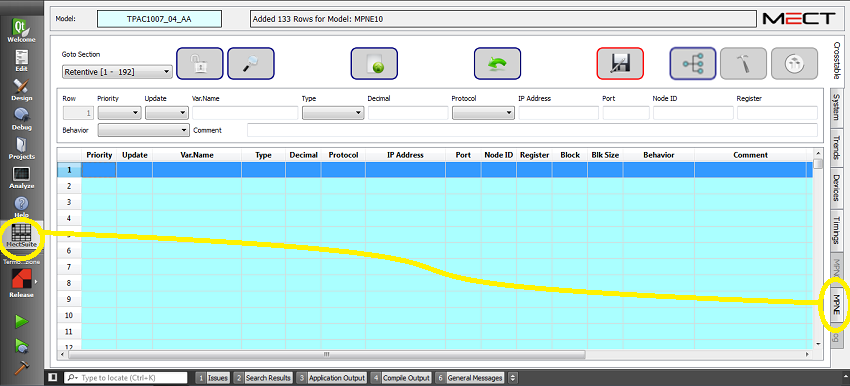
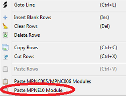
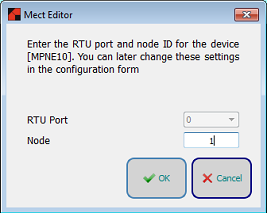
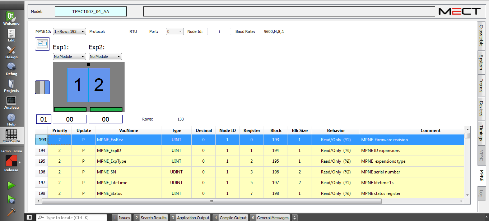
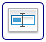
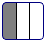
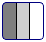

Le configurateur des modules à distance est un outil graphique utile pour définir la configuration du système d'automatisation et, une fois le modéle de PLC ou de panneau opérateur Mect défini, il permet la configuration des nœuds distants “MPNE” et de leurs variables utiles à l'application.
L'éditeur graphique du nœud distant MPNE n'est visible que si au moins un module de la famille MPNE a été inséré dans le projet.

Pour insérer un module, appuyez sur le bouton droit de la souris dans une ligne de la Crosstable et sélectionnez “Paste MPNE10 Module”.

Dans la fenêtre suivante, vous pouvez définir l'adresse du nœud que vous utilisez. Si le dispositif Mect dispose de plusieurs ports RTU, le système vous permet d'associer le port au nœud.

L'interface est la suivante:

Dans le champ “Model” apparaît le code du PLC(API) ou du panneau opérateur Mect.
Dans le champ “MPNE10” vous pouvez sélectionner le nœud à utiliser pour la configuration du système. Le choix sera multiple si plusieurs nœuds distants sont combinés au même PLC ou panneau opérateur Mect.
Le champ “Port” est activé lorsque le modèle de PLC ou panneau opérateur Mect possède plus d'un port série 485 et permet de choisir le port avec lequel connecter le noeud distant.
Le champ “Node Id” est l'adresse du noeud distant et peut être défini par l'utilisateur.
Le bouton carré  permet de renommer les variables associées aux modules en changeant le préfixe “MPNE_” attribué par défaut par le système et identique pour tous les modules.
Le champ “Exp1” définit la configuration du module d'extension n°1 entre: “no Module, 8 Digital Input, 8 Digital Output, 2 AI – 1 AO”.
Le champ “Exp2” définit la configuration du module d'extension n°2 entre: “no Module, 8 Digital Input, 8 Digital Output, 2 AI – 1 AO”.
Remarque: Dans l'éditeur graphique, les modules de sortie avec 4 ou 8 relais du module MPNE ne sont pas inclus dans les choix car ils sont équivalents à l'extension “8 Digital Output”.
Le bouton three-state vous permet de filtrer les variables de la liste et il est composé de trois parties: une grise foncée, une grise claire et une bleu. Selon l'état, différentes variables sont affichées:
 Le bouton lorsque seulement le gris foncé est activé affiche les variables de la carte de base UNIQUEMENT.
 Le bouton gris foncé et gris clair activés affiche les variables de la carte de base et les variables des autres modules d'extension utilisés dans le système.
Le bouton avec le gris foncé, le gris clair et le bleu clair activés affiche les variables de la carte de base, les variables des autres modules d'extension utilisés et les variables non encore associées à une extension, mais qui pourraient être utilisées dans le système.
Lorsqu'un nouveau module est inséré, les variables des modules insérés sont automatiquement activées et affichées dans le tableau ci-dessous. Pour visualiser les variables associées aux autres modules, utilisez le bouton three-state .
En cliquant sur l'un des modules insérés dans le système, seules les variables du module sélectionné sont affichées dans le tableau.
Le tableau est en mode READ-ONLY. En cliquant sur la variable désirée, vous pouvez accéder directement à l'éditeur de la Crosstable où vous pouvez modifier les données.